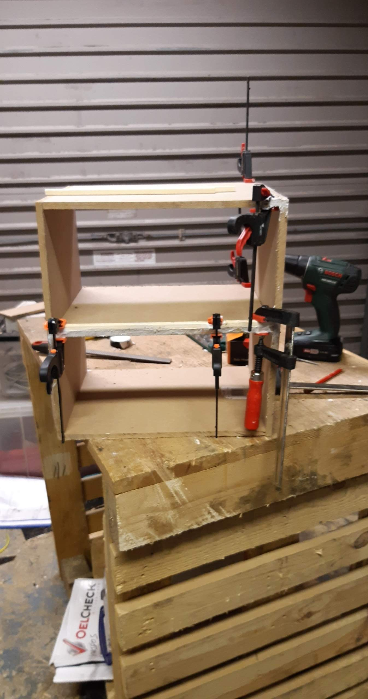
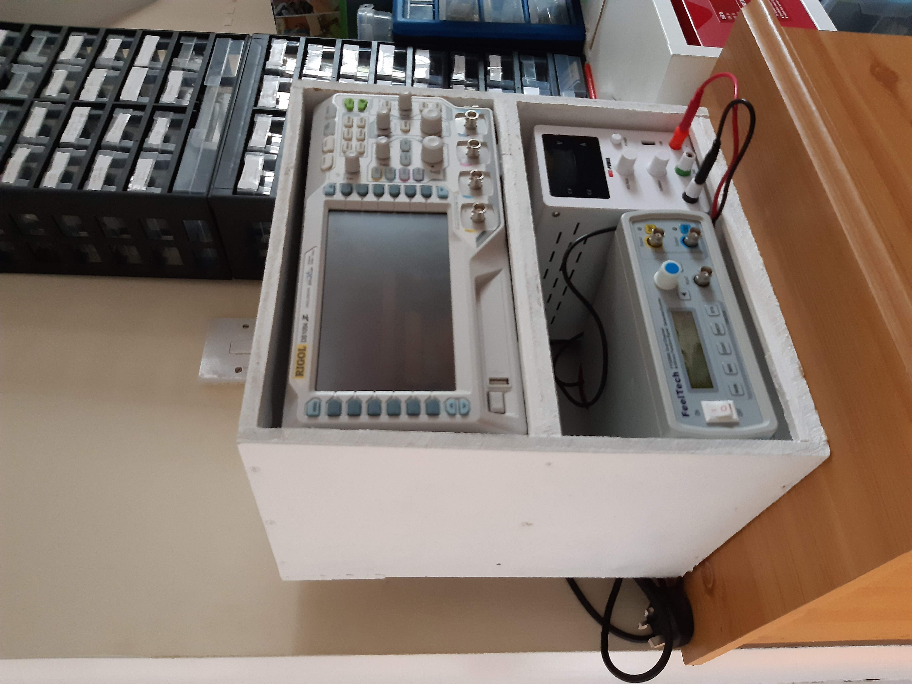
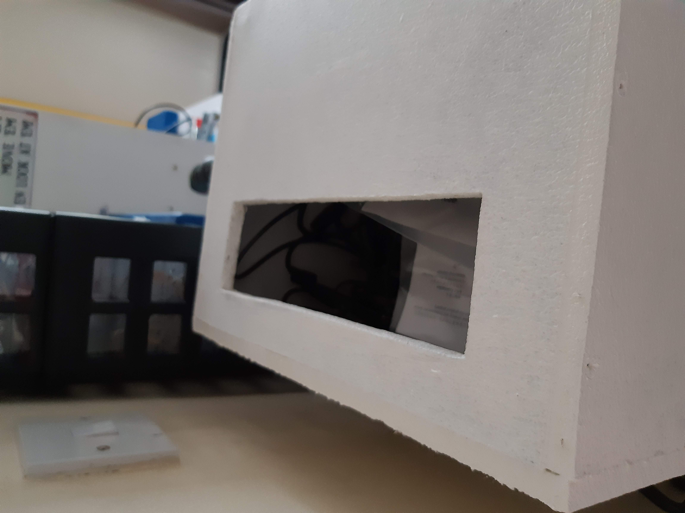
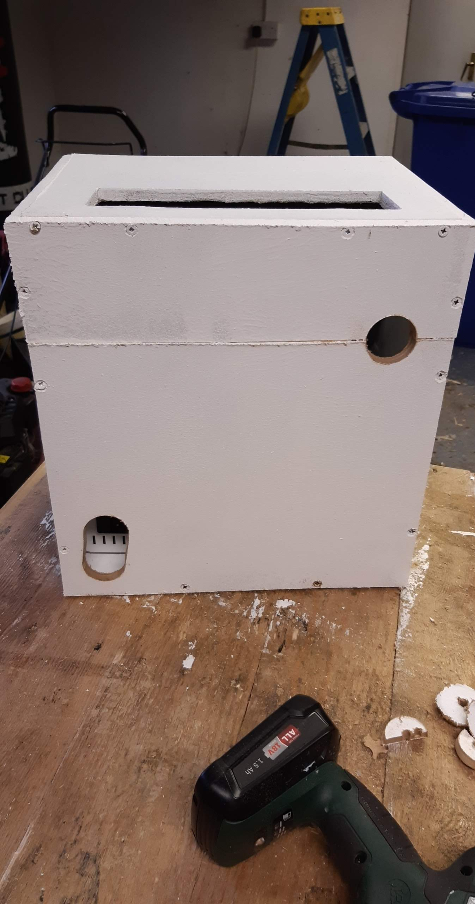

This project provides a tidy and sturdy way to organize your electronic test equipment such as an oscilloscope, power supply, and signal generator. It uses cut MDF or plywood panels to build a custom-sized rack to fit your bench setup. I made this particular one to suit the dimensions of my own power supply, scope and function generator, and used scrap wood that was already in the shed.
Here is a photo taken during the construction phase to show progress and setup of the clamps, the unit was glued at all the joints with a generic wood glue and screws where added for a little extra strength.




The shelves are designed to hold my own custom equipment safely and compactly, saving space on the bench and generally making them easier to use.
This project is perfect for hobbyists looking to clean up their electronics workspace. You could add rubber feet, angled front panels, or ventilation slots as enhancements.